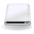

Sonstige Hardware
Netzwerk¶
WLAN
 drahtlos ins Internet
drahtlos ins InternetdLAN - Vernetzung und Internet über das Stromnetz
ISDN-Karten
ÜbersichtsartikelFritzBox
Sammelbecken für alle Artikel, die sich um die Fritz!Box drehenFritzBox/Roger Router - Faxe über FritzBox und ähnliche DSL-Router/-Geräte verschicken und empfangen
SmartLink - Installation eines SmartLink-Modems/AC97
Analog faxen - Fax senden und empfangen mit einem Analogmodem
Faxe schicken und empfangen - Fax aus Ubuntu

Laufwerke¶
bonnie++ - Geschwindigkeit einer Festplatte messen
DVD-RAM - eine DVD als Laufwerk einbinden und darauf zugreifen
Partitionierung - eine Festplatte partitionieren und formatieren
Diskette formatieren - eine Diskette partitionieren und formatieren
SSD - Solid State Disk unter Ubuntu einsetzen
Statische Bindung - ein externes Laufwerk statisch einbinden
Festplattenstatus - mit SMART den Festplattenstatus überprüfen
Festplatten-Geschwindigkeitstest - Geschwindigkeit eines Laufwerkes ermitteln
hddtemp - die Temperatur von Festplatten auslesen
Labels - einen Namen für eine Partition festlegen
mtx - Bandroboter für Bandlaufwerke steuern
regionset - Regionalcode auf einem DVD-Laufwerk ändern
Sicherungskopien auf Streamer - Bandlaufwerke steuern
USB-Datenträger - USB-Datenträger automatisch einbinden, wenn sie eingesteckt werden
HBCI Kartenleser - Daten von HBCI-Karten einlesen
Smart Cards - beispielsweise als universelle Studentenausweise

GPS¶
gpsd - Daten von GPS-Empfänger auslesen
Garmin eTrex Legend / Vista HCx - GPS-Empfänger & Tracker.
Firmware - Aktualisierung der Gerätesoftware
Holux m241 - GPS-Tracker und Empfänger
jTomTom - Basisfunktionen eines TomTom nutzen
pyTOMTOM - Basisfunktionen eines TomTom nutzen

Sonstiges¶
ActivInspire - Software für elektronische, interaktive Whiteboards
Alix - Ubuntu auf einem Alix-Board für kleine Homeserver installieren.
Alix/CF-Bootmedium erstellen - ein bootfähiges System auf einer CF-Karte für Alix auf einem anderen Rechner einrichten
ANT+ - Zugriff auf ANT-Geräte
Bluetooth
Einrichtung und Nutzung von Bluetooth unter UbuntuEasyCAP DC60 - ein USB Audio- und Videograbber
Festplattenschutz bei Lenovo / IBM Notebooks aktivieren
FireWire - Einrichtung von und Problemlösungen für FireWire
Firmware Test Suite - "Gesundheitscheck" für Bios und Kernel
fprint - Anmelden und Identifizieren per Fingerabdruck
gtkam - Bilder einer Digital-Kamera via PTP auslesen
Hercules DJ Console - Hardware-Mixer
Infrarot - Einrichtung einer Infrarot-Verbindung
Kamera via PTP einbinden - Digital-Kameras nutzen, die nicht automatisch eingebunden werden
Lego Mindstorms - Verwendung unter Ubuntu
MK802-MiniPC - Ubuntu auf MK802-Board installieren
Multicore - Probleme mit Mehrkern-Prozessoren beheben oder Kerne gezielt abschalten
ThinkFinger - Anmelden und Identifizieren per Fingerabdruck
TiLP - Texas Instruments Taschenrechner mit dem Computer verbinden
tiptoi - audiodigitales Lernsystem
USB-Mikroskop - kleines Mikroskop, technisch gesehen eine Webcam
Webcam
Übersicht über Einrichtung und Anwendungen
- Erstellt mit Inyoka
-
 2004 – 2017 ubuntuusers.de • Einige Rechte vorbehalten
2004 – 2017 ubuntuusers.de • Einige Rechte vorbehalten
Lizenz • Kontakt • Datenschutz • Impressum • Serverstatus -
Serverhousing gespendet von